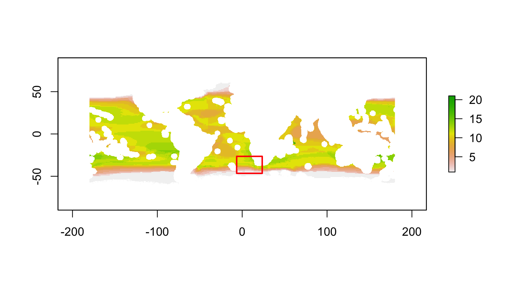
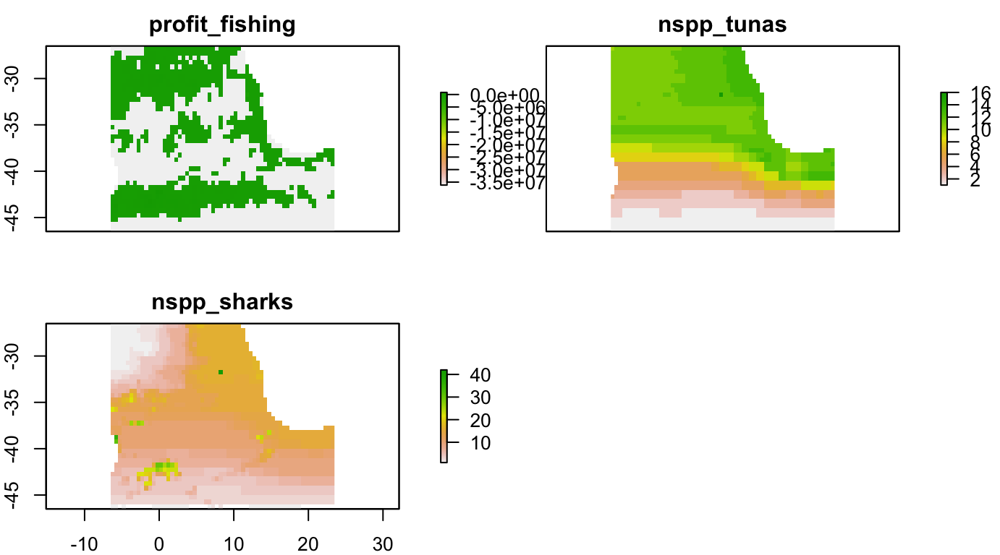

For Christopher Costello costello@bren.ucsb.edu, facilitated by Reniel Cabral rcabral@bren.ucsb.edu.
bbnj R packageInstall the bbnj R package (and devtools if needed).
install.packages(devtools)
devtools::install_github("ecoquants/bbnj")See list of datasets in bbnj reference. Datasets are “lazy-loaded”" with library(bbnj), meaning available in path but not showing up in Environment tab of RStudio.
library(tidyverse)
library(raster)
library(bbnj)
# list bbnj datasets in RStudio:
data(package="bbnj")
# list raster layers within stacks (s_*)
names(s_fish_gfw)## [1] "fishing_KWH"
## [2] "mean_costs"
## [3] "revenue"
## [4] "mean_scaled_profits"
## [5] "mean_scaled_profits_with_subsidies"
## [6] "scaled_profits_low_labor_cost"names(s_bio_gmbi)## [1] "nspp_all" "nspp_bivalves"
## [3] "nspp_chitons" "nspp_coastal.fishes"
## [5] "nspp_corals" "nspp_crustaceans"
## [7] "nspp_echinoderms" "nspp_euphausiids"
## [9] "nspp_gastropods" "nspp_hydrozoans"
## [11] "nspp_mangroves" "nspp_na"
## [13] "nspp_non.squid.cephalopods" "nspp_pinnipeds"
## [15] "nspp_reptiles" "nspp_sea.spiders"
## [17] "nspp_seagrasses" "nspp_sharks"
## [19] "nspp_sponges" "nspp_tunas.n.billfishes"
## [21] "nspp_tunicates" "nspp_worms"
## [23] "rls_all" "rls_bivalves"
## [25] "rls_coastal.fishes" "rls_corals"
## [27] "rls_crustaceans" "rls_echinoderms"
## [29] "rls_gastropods" "rls_na"
## [31] "rls_non.squid.cephalopods" "rls_pinnipeds"
## [33] "rls_reptiles" "rls_sharks"
## [35] "rls_tunas.n.billfishes"# get rasters from stacks
profit_fishing <- raster(s_fish_gfw, "mean_scaled_profits_with_subsidies") %>%
gap_fill_raster()
nspp_tunas <- raster(s_bio_gmbi, "nspp_tunas.n.billfishes")
nspp_sharks <- raster(s_bio_gmbi, "nspp_sharks")
# stack wanted rasters for later cropping
s <- stack(profit_fishing, nspp_tunas, nspp_sharks)
names(s) <- c("profit_fishing", "nspp_tunas", "nspp_sharks")You’ll need to run the raster::drawExtent() function interactively (ie not “knitting”) within RStudio, outputting to console.
aoi_rds <- "aoi.rds"
s_aoi_rds <- "s_aoi.rds"
if (interactive()){
# draw your own area of interest
plot(nspp_tunas)
aoi <- raster::drawExtent()
saveRDS(aoi, file = aoi_rds)
} else {
# load existing
aoi <- readRDS(aoi_rds)
}
# show area of interest
aoi## class : Extent
## xmin : -6.523557
## xmax : 23.58517
## ymin : -46.54307
## ymax : -26.47059
# crop raster
s_aoi <- raster::crop(s, aoi)
# save and plot
saveRDS(s_aoi, file = s_aoi_rds)
plot(s_aoi)